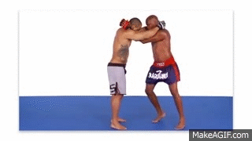

CLINCH
Introduction
Clinch is
When to use
If you are facing an aggressive opponent, the clinch is a great option to neutralize their attacks and close the distance. To hold your opponent, you have a variety of options such as the double collar tie, single collar tie, bear hug or double underhook clinching positions.
Examples
